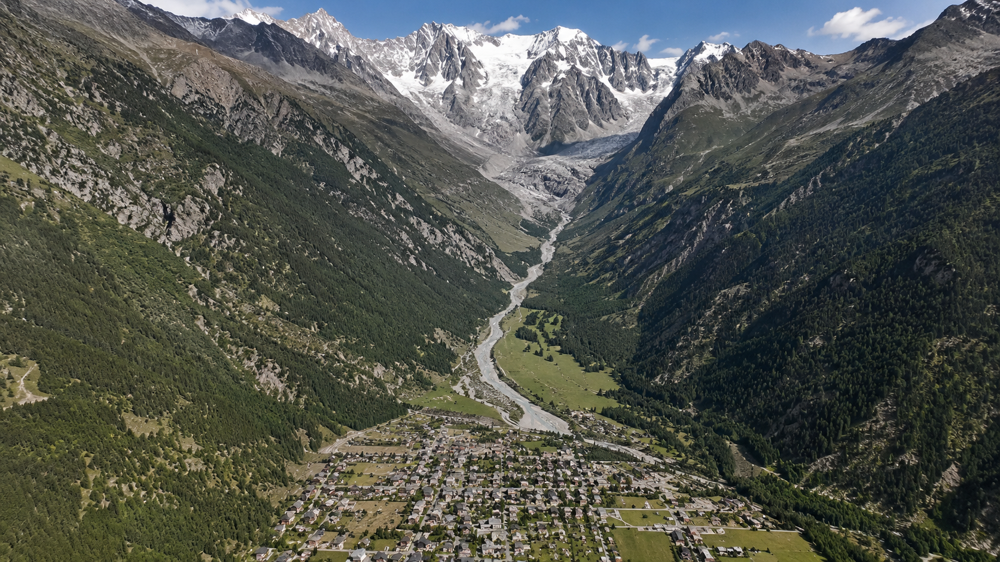
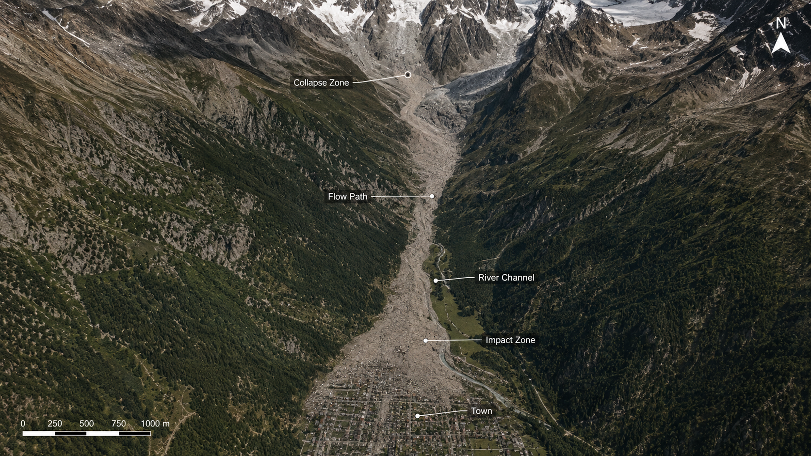

Aerial survey
Lower-valley impact zone
The completed debris corridor and main deposition area after the flow reached the settlement.
Archived measurements and population records from the affected valley.
Two archived views show the same valley before the event and after the debris flow.

The reconstruction follows the initiating site, full source-area failure, aerial aftermath, and ground-level deposit.
The post-event reconstruction identifies the source zone, transfer corridor, debris-flow transition, and principal impact area.

Detailed records remain folded until opened. They are not required to read the event summary.
The archive records the lower valley first from the air and then from ground level.
The completed debris corridor and main deposition area after the flow reached the settlement.
Coarse sediment, transported blocks, and buried surface structures within the affected area.
Final classification of the initiating cause and documented consequences.